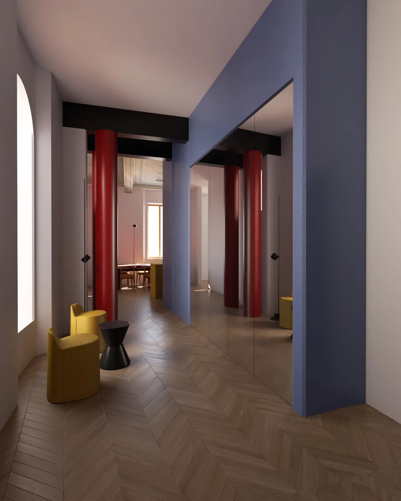

Ristrutturare casa nel centro storico di Modena

In ogni città, il centro storico è il tessuto urbano in cui si trovano gli appartamenti con le piante più singolari. Vanno trattati come pezzi unici: dal progetto alla scelta delle finiture serve un'attenzione precisa, che ne valorizzi l'esclusività.
Il caso di via Carteria
In via Carteria, insieme al geom. Alessandro Orrea, sto lavorando al progetto di un appartamento signorile caratterizzato da soffitti affrescati, un camino e finiture di pregio. L'obiettivo è intervenire sulla distribuzione degli spazi preservando il più possibile l'identità originaria dell'abitazione.
La soluzione individuata si sviluppa attorno a un nucleo che raccoglie i servizi e organizza le funzioni, lasciando libero uno spazio fluido che attraversa l'intero appartamento. I nuovi elementi si configurano come volumi bassi, distinti dall'esistente per colore, forma e altezza. Un contrasto intenzionale che permette di riconoscere gli interventi contemporanei senza alterare la leggibilità degli elementi storici.
L'identità del luogo
In un edificio storico metto a sistema le richieste della committenza e la dimensione naturale dello spazio: le preesistenze, l'anima del luogo. Il progetto cerca di capirne l'identità e di darle forma.
Vincoli e pratiche
Il Duomo, la Ghirlandina e Piazza Grande sono patrimonio UNESCO dal 1997, e il centro storico segue regole comunali specifiche. Alcuni edifici sono anche vincolati come beni culturali: oltre al titolo edilizio del Comune, CILA o SCIA a seconda dei lavori, serve l'autorizzazione della Soprintendenza, con tempi da mettere in conto fin dall'inizio. Trovi di più nella pagina centri storici e siti UNESCO.